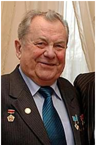

ПЕРШИЙ УКРАЇНЕЦЬ У КОСМОСІ

Попович Павло Романович (нар.05.10.1930, м. Узин Білоцерківського
р-ну Київської обл. —
30.09.2009, м. Гурзуф, АР Крим) —
льотчик-космонавт, перший український космонавт, генерал-
майор
авіації (1976), кандидат технічних наук (1977). Двічі Герой
Радянського Союзу (18.8.1962
та 20.07.1974).
Закінчив військове авіаційне училище (1954), Військово-повітряну
інженерну академію ім. Жуковського (1968). Після закінчення
училища служив у частинах ВПС.
12—15 серпня 1962 р. здійснив на кораблі-супутнику «Восток-4» перший
у світі груповий політ двох пілотованих кораблів спільно з А.
Ніколаєвим, який пілотував космічний корабель «Восток-3». У ході
групового польоту було проведено перші експерименти з
радіозв’язку між екіпажами двох кораблів у космосі і взаємне
фотографування, виконано широку програму науково-технічних і
медико-біологічних експериментів. Провадив орієнтацію корабля в
просторі за допомогою системи ручного управління. За успішне
здійснення першого в світі групового космічного польоту і проявлені
при цьому мужність і героїзм отримав звання Героя
Радянського Союзу.
Другий політ у космос здійснив 3—19 липня 1974 р. як командир
екіпажу космічного корабля «Союз-14» (спільно з бортінженером Ю.
Артюхіним). Зокрема, виконуючи завдання, 5 липня провів стиковку
«Союзу-14» з науковою станцією «Салют-3», що знаходилася на
орбіті з
25 червня 1974 р. Спільний політ космічного комплексу «Салют-3» —
«Союз-14» продовжувався 15 діб. За час польоту
космонавти
досліджували геолого-морфологічні об’єкти земної поверхні,
атмосферні утворення і явища, фізичні характеристики
космічного
простору, провели медико-біологічні дослідження з вивчення впливу
чинників космічного польоту на організм людини і
визначення
раціональних режимів роботи на борту станції. За цей політ на
орбітальній станції «Салют-3» і космічному кораблі
«Союз-14»
космонавту вдруге присвоєно звання Героя Радянського Союзу.
За заслуги в освоєнні космічного простору удостоєний Золотої медалі ім. К. Е. Ціолковського (АН СРСР), медалі де ла Во (ФАІ). Йому
також присвоєно звання Героя Праці Соціалістічної Республіки В’єтнам. Нагороджений двома орденами Леніна, орденом Червоної
Зірки і медалями, а також іноземними орденами. Президент уфологічної асоціації СНД, Академії енерго-інформаційних наук. Очолює
об’єднання української діаспори в Москві.
ПОСИЛАННЯ: http://www. ukrop. com/ua